सुविकल्प: Mine Repurposing Tool
Select factors and sub-factors to discover suitable repurposing options for your mining site
![Coal Controller Organisation emblem]()
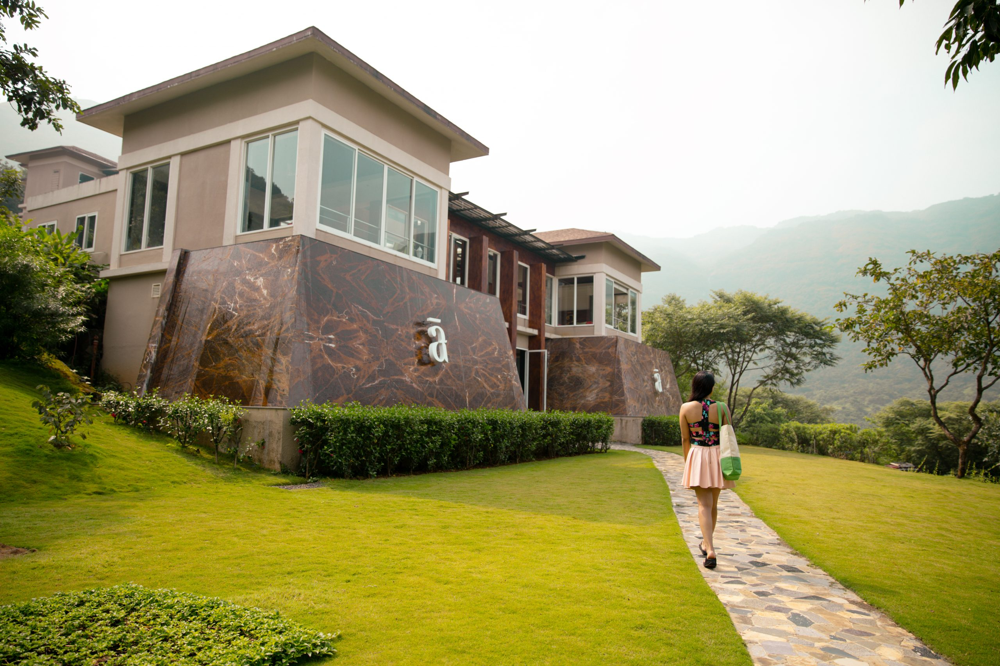
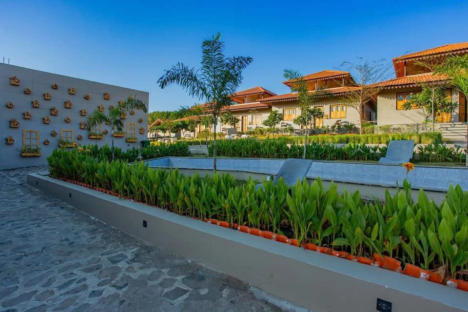
Covers the project concept, strategic rationale, site suitability and technical specification matrix, and indicative scale models — from a 0.5 ha community wellness node to a 25+ ha flagship wellness and ecological healing campus on repurposed mine land.
This concept proposes the development of a Wellness Centre / Healing / Nature Therapy Centre within a closed, closing, reclaimed, or repurposed mine area as part of a broader mine-closure and post-mining land-use strategy. The objective is to transform selected mine land, reclaimed landscapes, plantations, water bodies, quiet open spaces, restored dumps, benches, natural slopes, and community-facing areas into a restorative public-use facility.
The Centre is different from a general park or recreation facility because its main focus is the structured use of restored mine landscapes for healing, relaxation, yoga, meditation, forest bathing, therapeutic walking, nature immersion, stress reduction, environmental awareness, and community wellness.
Possible components include: wellness reception and visitor orientation centre; yoga hall, open-air yoga deck, meditation pavilion, and breathing-practice spaces; forest bathing trail, nature-therapy trail, sensory walking path, barefoot path, and quiet walking loops; herbal garden, medicinal plant garden, aroma garden, butterfly garden, and healing landscape zones; naturopathy consultation room, wellness counselling room, therapy rooms, and recovery spaces; water-edge healing deck, reflection pond, mine-lake viewing area, and nature observation points; mindfulness zone, silence zone, digital-detox zone, and community healing space; healthy café, herbal beverage kiosk, local food counter, organic produce shop, and wellness retail; interpretation spaces for ecological restoration, mine-closure transformation, and sustainable living; and community enterprise spaces for local youth, former mine workers, women's groups, self-help groups, and wellness facilitators.
Important note: The mine-area Wellness Centre should be positioned as a safe, guided, restorative, inclusive, and professionally managed wellness and preventive health support space — not as a substitute for clinical treatment.
The following matrix provides a structured checklist for assessing the suitability of the proposed site for the selected repurposing option. It identifies the key physical, technical, environmental, infrastructure, legal, and owner-side readiness parameters that should be reviewed before the project is advanced to the next stage of development. The purpose of this matrix is to help the project owner understand existing site conditions, technical requirements, potential constraints, and preparatory actions required before feasibility studies, approvals, or tendering are initiated.
| Category | What to Assess / Prepare | Why It Matters | Owner-Side Readiness |
|---|---|---|---|
| Land / Area | Total land, developable area, quiet zones, landscape zones, water bodies, visitor zones, restricted zones, buffer areas | Determines scale of wellness buildings, healing gardens, walking trails, retreat spaces, parking, and circulation | Land map and usable-area estimate |
| Topography | Slopes, terraces, dumps, benches, level differences, walking gradients, cut-fill requirements | Visitor comfort, universal accessibility, drainage, and quiet walking loops depend on stable topography | Topographic survey |
| Ground Condition | Bearing capacity, reclaimed land quality, settlement risk, filled areas, underground voids, dump stability | Critical for safe construction, walking paths, yoga decks, pavilions, cottages, and gardens | Geotechnical and stability investigation |
| Mine Hazard Safety | Subsidence, old shafts, voids, unstable slopes, gas, open water, unsafe structures, electrical hazards | Wellness use must not expose visitors to residual mine hazards | Mine hazard risk note |
| Restorative Value | Noise levels, visual disturbance, industrial activity, traffic, dust, night lighting, surrounding land use | Nature therapy requires calm, safe, clean, and low-disturbance environments | Restorative landscape note |
| Ecological Potential | Existing plantations, water bodies, shaded areas, biodiversity patches, scenic views, medicinal plant potential | Strong landscape quality improves healing value, visitor experience, and wellness identity | Ecological and landscape note |
| Centre Capacity | Expected daily visitors, yoga groups, retreat groups, elderly visitors, school groups, corporate wellness groups | Influences hall size, trail capacity, toilets, parking, seating, staff, and emergency planning | Preliminary demand estimate |
| Wellness Program Strategy | Yoga, meditation, breathing practices, forest bathing, nature walks, stress-reduction sessions, preventive health camps | Defines the operating identity of the Centre and avoids it becoming only a landscaped park | Wellness concept note |
| Healing Landscape Strategy | Sensory trails, herbal garden, aroma garden, water-edge seating, silence zones, shaded loops, contemplative spaces | Nature therapy depends on carefully designed restorative environments | Healing landscape concept |
| Accessibility | Ramps, accessible toilets, handrails, tactile paths, gentle walking loops, rest points, shaded seating, accessible signage | Public wellness facilities should be accessible to elderly persons, children, and persons with disabilities per Harmonised Guidelines | Accessibility concept note |
| Building Suitability | Condition of existing mine buildings, guest houses, training centres, offices, shelters, foundations, roof, corrosion | Determines whether adaptive reuse is safe and economically viable | Structural screening note |
| Fire & Life Safety | Exits, alarm systems, extinguishers, assembly points, emergency lighting, safe evacuation routes | Essential for public occupancy buildings, retreat rooms, café, and group programs | Draft safety concept |
| Utilities | Electricity, water supply, sanitation, HVAC, lighting, IT systems, CCTV, PA system, emergency communication | Core requirements for modern wellness operation | Utility feasibility note |
| Legal / Approvals | Land rights, mine closure status, public building approvals, wellness / naturopathy / yoga / food-service / accommodation permissions | Fundamental before procurement | Approval pathway note |
The following matrix presents an indicative relationship between available site area, project scale, technical configuration, and likely development potential. It is intended to support preliminary planning by helping the project owner identify the appropriate scale and configuration for the proposed repurposing option. The values and recommendations are indicative and should be refined through detailed feasibility studies, site surveys, engineering assessments, and relevant technical and commercial evaluations.
| Land Area | Indicative Scale | Likely Configuration | Typical Use Case |
|---|---|---|---|
| 0.5–1.0 ha | Community wellness centre | Reception kiosk, yoga deck, meditation shelter, herbal garden, short sensory trail, seating, toilets, drinking water | Local community wellness, morning yoga, elderly walks, school awareness visits |
| 1–2 ha | Local healing and nature therapy centre | Yoga hall, meditation pavilion, therapy rooms, herbal garden, shaded walking loop, café / herbal kiosk, first-aid room | Local wellness programs, group meditation, school visits, community health camps |
| 2–5 ha | District-level wellness and healing centre | Multiple therapy trails, yoga hall, meditation zones, sensory garden, naturopathy rooms, wellness classroom, café, parking, water-edge seating | District wellness tourism, day retreats, school programs, preventive health camps |
| 5–10 ha | Regional wellness and healing destination | Wellness centre building, yoga / meditation halls, healing gardens, forest bathing trail, eco-cabins, retreat rooms, healthy café, therapy rooms, lake-view deck | Regional tourism, corporate wellness, multi-day retreats, yoga camps, wellness workshops |
| 10–25 ha | Destination-oriented mine-closure repurposing project | Multi-zone campus with retreat accommodation, healing forest, meditation valley, therapeutic gardens, wellness clinic, community wellness zone, café, restoration park | Signature wellness tourism destination, institutional retreats, health camps, ecological learning |
| 25 ha+ | Flagship wellness and ecological healing campus | Large campus with wellness retreat, nature therapy forest, meditation landscapes, healing gardens, eco-accommodation, water-body restoration, training centre, community enterprise zone | Regional / national wellness destination, just-transition demonstration, long-stay wellness tourism |
Describes the seven implementation models for Wellness Centre projects — EPC through Hybrid — and the comparative assessment of ownership, welfare suitability, wellness programming quality, tourism potential, and local livelihood generation by model.
The following table outlines the possible implementation models that may be considered for developing the proposed repurposing project. These models differ in terms of ownership structure, funding responsibility, private sector participation, operational control, and long-term risk allocation. The purpose of this table is to help the project owner compare broad development routes and select an implementation approach that aligns with its financial capacity, institutional preference, risk appetite, and long-term asset management objectives.
| Main Group | Model | Core Feature | Broad Suitability |
|---|---|---|---|
| Owner-led | EPC | Mine owner funds, develops, and retains full ownership; contractor designs and constructs per owner's requirements | Suitable where the owner wants full control over wellness purpose, public access, pricing, community use, land use, and long-term ownership |
| Owner-led | EPC + O&M / FM | Owner funds and owns the Centre; specialized agencies engaged for operations, maintenance, visitor services, wellness programming, housekeeping, landscaping | Suitable where the owner wants ownership and policy control but needs professional support for wellness operations and visitor-facing management |
| PPP / Developer | BOOT | Private developer finances, builds, owns, and operates during concession period; transfers back at end of term | Suitable where the owner wants to reduce upfront capital burden while ensuring eventual transfer, subject to strong public-access and wellness-quality obligations |
| PPP / Developer | BOO | Private developer finances, develops, owns, and operates on long-term basis without mandatory transfer | Suitable only where long-term private control is acceptable and the project has strong commercial or institutional backing |
| PPP / Developer | DBFOT | Private concessionaire designs, builds, finances, operates, and transfers under structured PPP arrangement | Suitable for larger wellness-tourism projects requiring private finance, professional development, retreat operation, and eventual transfer |
| PPP / Developer | Concession / LDO | Owner provides land and reclaimed landscape; concessionaire develops, restores, upgrades, operates, and commercializes under public-purpose conditions | Very suitable where the owner wants to retain land control but allow a professional wellness operator to activate the site |
| Mixed | Hybrid | Owner-funded safety works, restoration, utilities, public areas, and basic wellness infrastructure combined with private participation in therapy rooms, retreat operation, café, programming, and visitor services | Most suitable where the Centre has strong public and social value but also needs private efficiency, phased investment, and specialist wellness capability |
The following comparative assessment evaluates the major implementation models across key decision parameters such as investment requirement, ownership control, financing responsibility, contractual complexity, risk transfer, and long-term economic benefit. This matrix is intended to support early-stage decision-making by highlighting the relative strengths and limitations of each model. The final choice of model should be guided by the specific circumstances of the project, including its scale, commercial viability, applicable policy framework, and the owner's institutional preference.
| Parameter | EPC | EPC+O&M | BOOT | BOO | DBFOT | Concession | Hybrid |
|---|---|---|---|---|---|---|---|
| Owner upfront investment | High | High | Low–Moderate | Low | Low–Moderate | Low–Moderate | Variable |
| Welfare / community suitability | High | Very High | High if protected | Moderate | High if safeguarded | High if safeguarded | Very High |
| Healing / nature therapy suitability | High | Very High | High if wellness standards defined | Moderate–High | High | Very High if obligations clear | Very High |
| Wellness tourism suitability | Moderate | High | High | High | Very High | Very High | High |
| Local livelihood generation | High | Very High | High | Moderate–High | High–Very High | Very High | Very High |
| Risk of over-commercialization | Low | Low–Moderate | Moderate | High | Moderate | Moderate | Low–Moderate if well designed |
| Ecological restoration protection | High | Very High | Moderate–High | Moderate | High | High if mandated | Very High |
| Overall suitability | Moderate–High | High | High | Moderate | Very High | Very High | Very High / Best |
The following table explains how major project responsibilities are typically allocated under different implementation models. It covers key functional areas such as site availability, financing, design and construction, regulatory approvals, operation and maintenance, revenue collection, asset ownership, and end-of-term transfer. This helps clarify the respective roles of the project owner, private developer, EPC contractor, operator, or concessionaire, and supports the preparation of tender documents and contractual structures.
| Responsibility Area | EPC | EPC+O&M | BOOT | DBFOT | Concession | Hybrid |
|---|---|---|---|---|---|---|
| Site / land availability | Mine Owner | Mine Owner | Mine Owner / authority | Mine Owner / authority | Mine Owner / authority | Mine Owner / shared |
| Concept & master planning | Primarily owner | Owner + consultant | Shared / developer-led | Shared, owner at structuring stage | Shared | Shared |
| Site safety and hazard zoning | Owner / safety consultant | Owner + O&M input | Shared | Shared | Shared | Shared |
| Landscape restoration design | Owner-defined, contractor-executed | Owner-defined + specialist | Developer with owner safeguards | Developer / concessionaire | Concessionaire / developer + owner approval | Shared |
| Wellness program design | Owner-defined | Owner-defined + operator input | Developer / operator | Developer / concessionaire | Concessionaire / wellness operator | Shared |
| Healing / nature therapy design | Owner-defined | Owner-defined + specialist | Developer / operator | Developer / concessionaire | Concessionaire / wellness operator | Shared |
| Construction / development | EPC contractor | EPC contractor | Developer via contractors | Developer / concessionaire | Concessionaire / developer | Variable |
| Operations | Mine Owner | Specialist O&M agency | Developer during concession | Developer / concessionaire | Concessionaire / operator | Shared |
| Yoga / meditation / wellness programming | Owner | Owner or specialist operator | Developer / operator | Developer / concessionaire | Concessionaire / operator | Shared |
| Nature therapy / guided walks | Owner | Owner or specialist operator | Developer / operator | Developer / concessionaire | Concessionaire / operator | Shared |
| Community access / welfare obligations | Owner-controlled | Owner-controlled | Contract-based | Contract-based; explicitly protect | Contract-based; explicitly protect | Strongly configurable |
| SHG / local guide / vendor inclusion | Owner-controlled | Owner + operator support | Contract-based | Can be built into PPP terms | Can be built into concession terms | Strongly configurable |
| Transfer at end of term | No | No | Yes | Yes | As agreed | As agreed |
Covers funding logic by model, revenue generation streams — entry tickets, yoga sessions, wellness walks, retreat packages, therapy rooms, café, herbal products, sponsorship — and livelihood outcomes for local guides, SHGs, wellness facilitators, and former mine workers.
The following table presents the broad funding logic for each implementation model. It explains who is expected to finance the project, the level of owner-side funding requirement, and the commercial rationale behind each structure. This section is intended to help the project owner assess whether the project is more suitable for owner-funded development, private investment, public-private partnership, lease or concession structure, or a hybrid funding arrangement.
| Model | Primary Funding Source | Owner Funding Req. | Commercial Logic |
|---|---|---|---|
| EPC | Owner budget, internal accruals, CSR, grants, tourism support, ecological restoration funds, institutional support, or debt | High | Owner directly finances and develops; retains full ownership and captures long-term public, wellness, environmental, social, and commercial benefits |
| EPC + O&M / FM | Owner budget, grants, CSR, tourism support, institutional funding, or owner debt; O&M funded through annual budget or operational revenue | High | Owner finances and retains ownership while specialized agencies undertake operations, wellness programming, ticketing, housekeeping, landscaping, and facility management |
| BOOT | Private developer equity, project finance, external debt, viability-gap support where needed, concession-linked support | Low–Moderate | Developer recovers investment through entry tickets, wellness sessions, retreats, therapy rooms, yoga programs, accommodation, café, retail, parking, sponsorship, and tourism-linked services |
| BOO | Private developer equity, private debt, strategic investors, wellness operators, hospitality investors, naturopathy institutions | Low | Developer finances, develops, owns, and operates on long-term basis; owner benefit through lease rent, land value, concession charges, or negotiated returns |
| DBFOT | Private concessionaire equity, project finance, debt, public support, viability-gap funding, tourism support, ecological restoration support where applicable | Low–Moderate | Investment recovery through entry fees, wellness packages, retreats, accommodation, café, retail, parking, sponsorship, training programs, and approved monetization streams |
| Concession / LDO | Private concessionaire investment, lease-based development finance, internal equity, debt, partial owner-side enabling support | Low–Moderate | Owner provides land and landscape rights; concessionaire invests in restoration, wellness facilities, therapy rooms, retreat accommodation, operations, and commercialization |
| Hybrid | Shared: owner, public authority, CSR, grants, tourism promotion, wellness development support, environmental restoration support, private investment | Variable | Owner may fund land stabilization, safety, core access, utilities, ecological restoration, and basic wellness infrastructure while private partners fund therapy rooms, retreat units, café, programming, and operations |
The following table explains how revenue may be generated under different implementation models and identifies who is likely to receive the principal project income. It also describes the nature and extent of the financial benefit available to the project owner, whether through direct project revenue, cost savings, lease income, concession fees, revenue sharing, service charges, or eventual asset transfer. This comparison is intended to support the selection of a commercially appropriate model for the proposed repurposing project.
| Model | Revenue Sources | Who Receives | Owner Benefit |
|---|---|---|---|
| EPC | Entry tickets, yoga sessions, meditation programs, nature-therapy walks, wellness consultations, day-retreat packages, café, herbal products, venue rentals, parking, sponsorship, donations, special events | Mine Owner | Full financial benefit from operational and commercial revenues |
| EPC + O&M / FM | Entry, wellness sessions, guided nature walks, educational visits, retreats, venue hire, café and retail, visitor charges, sponsorship, donations, service income net of O&M agency payments | Owner, after agency payments | High; retains core revenue rights and asset ownership |
| BOOT | Visitor tickets, yoga programs, meditation retreats, therapy rooms, naturopathy packages, guided healing trails, accommodation, café, retail, parking, sponsorship during concession | Developer / concessionaire during concession | Indirect through lease rent, concession fee, revenue share, and eventual asset transfer |
| BOO | Long-term commercial operation: tickets, wellness programs, retreats, accommodation, therapy packages, café, retail, events, sponsorship, tourism services | Developer / private owner | Limited direct benefit; through land lease, fixed concession charges, or negotiated returns |
| DBFOT | Entry tickets, wellness packages, yoga retreats, meditation programs, therapy rooms, accommodation, retail, food and beverage, sponsorship, parking, other approved streams | Developer / concessionaire during concession | Through concession fee, lease income, revenue-sharing arrangement, and asset transfer |
| Concession / LDO | Entry fees, guided healing trails, yoga sessions, retreats, wellness consultations, café, retail, accommodation, parking, sponsorship, and tourism-linked services | Concessionaire / operator as per agreement | Lease rentals, concession fee, revenue share, and enhanced land value |
| Hybrid | Public-use programming, entry tickets, wellness sessions, retreats, therapy services, school visits, café, retail, sponsorship, donations, parking, grants, support payments, shared commercial income | Shared as per agreement | Variable depending on ownership allocation, revenue rights, grant support, operator role, and commercial terms |
The following table assesses the likely local livelihood and employment potential of each implementation model. It considers the extent to which each model can support construction-phase jobs, long-term operational employment, local procurement opportunities, skill development, community participation, and associated support services. This section is particularly relevant where the repurposing project is expected to contribute to post-mining or post-operational economic transition and sustained local community benefit.
| Model | Local Job Potential | Why | Overall Suggestibility |
|---|---|---|---|
| EPC | High | Construction-phase local employment in landscaping, civil works, plantation, pathway construction, building works, utility installation, and garden creation | High |
| EPC + O&M / FM | Very High | Sustained jobs in operations, ticketing, wellness facilitation, yoga support, guided nature walks, housekeeping, security, gardening, café, retail, parking, maintenance, retreat support, and community programs | Very High / Most Suitable |
| BOOT | High | Construction and medium-to-long-term operational jobs; stronger if concession mandates local hiring, guide training, former-worker participation, local food, herbal product sales, SHG kiosks | High |
| BOO | Moderate–High | Development and continuing jobs; depends on private owner's staffing policy and local participation obligations | Moderate–High |
| DBFOT | High–Very High | Substantial employment during design, construction, landscaping, wellness facility development, operations, retreat management, café, retail, accommodation, parking, maintenance | Very High |
| Concession / LDO | High–Very High | Direct and indirect employment through wellness operations, guided nature therapy, retreats, café, local food, transport, cleaning, security, parking, landscaping, herbal product sales, craft retail | Very High |
| Hybrid | Very High | Explicit provisions for former mine workers, local youth, women's groups, SHGs, local guides, yoga instructors, wellness facilitators, gardeners, vendors, transport providers, and community-based enterprises | Very High / Highly Suitable |
The following combined comparison brings together three important dimensions of project structuring: revenue potential, owner-side financial benefit, and local livelihood generation. It provides a consolidated view of how each implementation model performs across commercial, institutional, and community-development perspectives. This matrix is intended to support balanced decision-making where the objective extends beyond financial return to include sustainable site reuse and long-term local economic benefit.
| Model | Owner Profitability | Local Job Creation | Overall Comment |
|---|---|---|---|
| EPC | High — owner retains full revenue after capital repayment | Moderate to High | Suitable where the owner has funding capacity and seeks full control over the asset |
| EPC + O&M / FM | High — full revenue retained after O&M / FM contract costs | High to Very High | Best for owners who want full control combined with professional facility management |
| BOOT | Moderate — income through lease, concession fee, or transfer value | High | Suitable where private financing is needed; owner benefits indirectly and gains the asset at end of concession |
| BOO | Low to Moderate — primarily through lease or royalty income | Moderate to High | Suitable where long-term private ownership is acceptable and the owner wishes to retain land rights |
| DBFOT | Moderate to High — through lease, concession fee, and transfer | High to Very High | Strong PPP structure for larger projects requiring private investment and structured public participation |
| Concession / LDO | Moderate — through concession fee and revenue-sharing arrangement | High to Very High | Highly suitable where the owner wants to retain land while outsourcing commercial activation |
| Hybrid | Variable to High — depends on structure and revenue-sharing terms | Very High | Most suitable where public value, community benefit, and commercial viability are all required |
Describes the 14-item checklist for what must be ready before the first RFP — site safety, ecological quality, wellness concept, demand assessment, accessibility, emergency response — and what can be taken up post-award by the selected bidder.
The following section identifies the key owner-side preparatory actions that should ideally be completed before issuing the first Request for Proposal. These actions are aimed at reducing uncertainty for prospective bidders, improving project bankability, clarifying site availability, identifying approval pathways and risks, and defining the technical and commercial scope of the project. Completing these preparatory steps before tendering can improve bid quality, attract credible responses, and reduce the risk of delays during project implementation.
Before issuing an RFP for a Wellness / Healing / Nature Therapy Centre mine repurposing project, the mine owner should prepare the following in priority order:
The following section lists the principal activities that may be undertaken by the selected contractor, developer, concessionaire, operator, or implementation agency after award of the project. These activities generally include detailed site investigations, engineering design, statutory submissions and approvals, equipment procurement, construction, commissioning, operational planning, staff training, and performance monitoring. The distinction between pre-RFP owner preparedness and post-award implementation responsibilities helps ensure an appropriate and efficient allocation of effort across the project development cycle.
After award, the selected concessionaire / contractor / O&M agency / wellness operator can take up the following activities in chronological order:
Covers the indicative 17-step implementation pathway, preferred models (Hybrid, Concession / LDO, DBFOT), recommended wellness and landscape safeguards, key references including Ministry of Tourism, Ministry of AYUSH, and CCO, and domain abbreviations.
The following implementation pathway presents a practical high-level sequence for advancing the proposed repurposing concept from initial approval through to project execution and long-term operation. It outlines the broad stages of concept approval, preliminary studies, model selection, bid preparation, procurement, detailed design, statutory approvals, construction, commissioning, and ongoing operation. This pathway is indicative and should be adapted to reflect the specific complexity, regulatory requirements, financing structure, and site conditions applicable to the project.
The following matrix presents an indicative relationship between available site area, project scale, technical configuration, and likely development potential. It is intended to support preliminary planning by helping the project owner identify the appropriate scale and configuration for the proposed repurposing option. The values and recommendations are indicative and should be refined through detailed feasibility studies, site surveys, engineering assessments, and relevant technical and commercial evaluations.
For a mine-area Wellness Centre / Healing / Nature Therapy Centre intended for public welfare, ecological restoration, preventive health, wellness tourism, community identity, and local livelihood, the most suitable models are likely to be Hybrid, Concession / Lease-Develop-Operate, and DBFOT.
Where the owner wants stronger public control, predictable access, direct oversight over pricing, safety, community use, wellness standards, and environmental management, EPC + O&M / Facility Management can also be a strong option.
A BOO model should be used cautiously because long-term private control may reduce owner influence over public access, pricing, ecological protection, wellness standards, local livelihood obligations, and community benefits unless the agreement is carefully structured.
Final model selection should be made only after review of: funding availability; ownership and control preference; landscape potential; tourism and visitor-demand potential; site safety and buildability; accessibility; revenue potential; local livelihood objectives; long-term O&M capability; and environmental-protection requirements.
The following way forward summarizes the preferred development approach for the proposed repurposing option, based on the assessment presented in PRISM (Post Mining Repurposing Implementation and Strategy Models). It identifies the most suitable implementation models in order of preference, highlights key technical and due-diligence considerations, and outlines the recommended next steps and broad development logic. This section is intended to guide internal decision-making and support the project owner in progressing from concept-stage evaluation toward feasibility assessment, project structuring, regulatory approvals, and implementation planning.
| Abbreviation | Full Form |
|---|---|
| A.R.T.H.A. | Green Finance for Coal Mines Repurposing |
| BOO | Build, Own, Operate |
| BOOT | Build, Own, Operate, Transfer |
| CAPEX | Capital Expenditure |
| CCTV | Closed-Circuit Television |
| CSR | Corporate Social Responsibility |
| DBFOT | Design, Build, Finance, Operate, Transfer |
| DPR | Detailed Project Report |
| EPC | Engineering, Procurement, and Construction |
| ESG | Environmental, Social, and Governance |
| FM | Facility Management |
| HVAC | Heating, Ventilation, and Air Conditioning |
| IT | Information Technology |
| L.I.V.E.S. | Livelihood, Inclusion, and Community Frameworks for Mine Closure |
| LDO | Lease-Develop-Operate |
| NBC | National Building Code |
| NIUA | National Institute of Urban Affairs |
| O&M | Operation and Maintenance |
| PA | Public Address |
| PMC | Project Management Consultant |
| PPP | Public-Private Partnership |
| QR | Quick Response |
| RFP | Request for Proposal |
| RPwD | Rights of Persons with Disabilities |
| SHG | Self-Help Group |
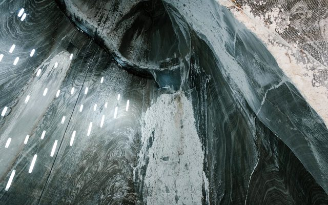
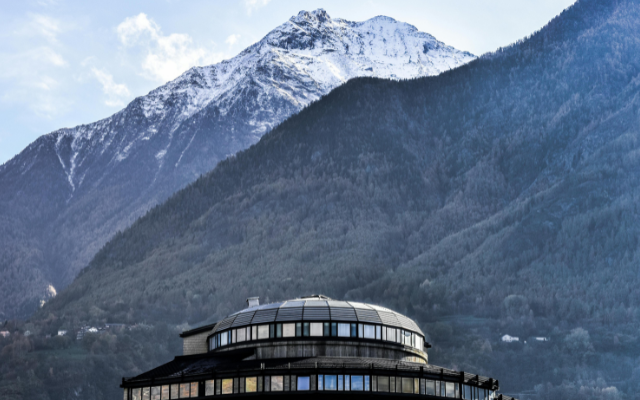
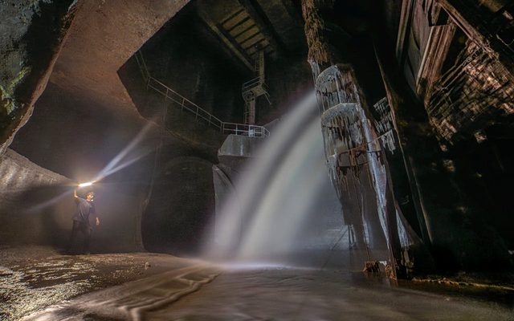
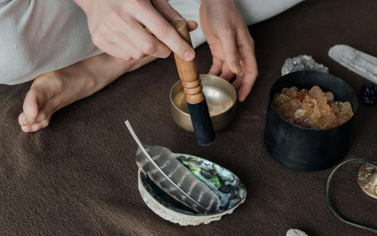
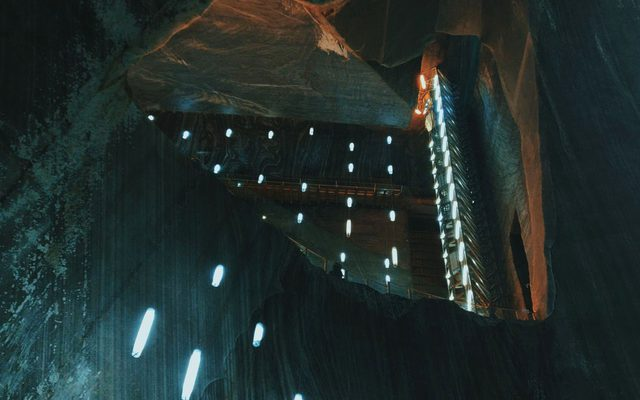
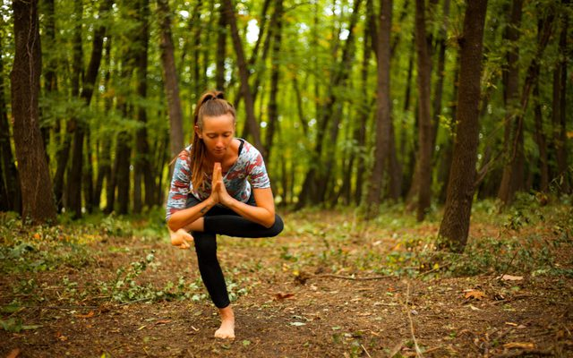
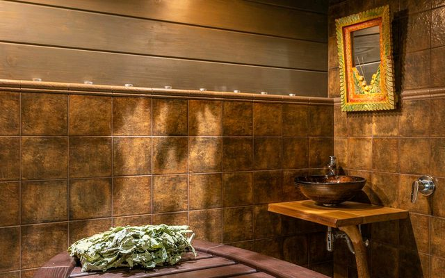
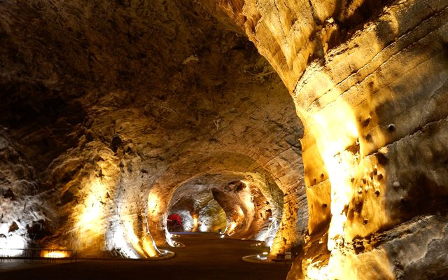
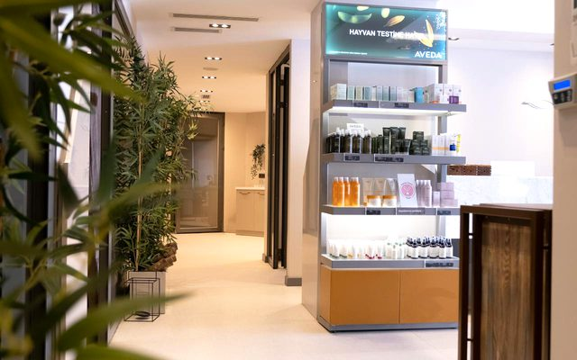
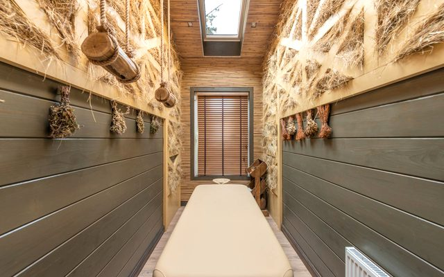
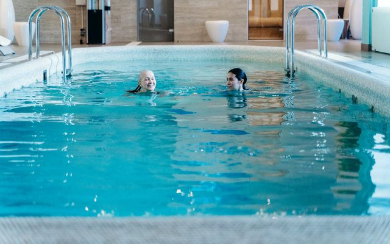
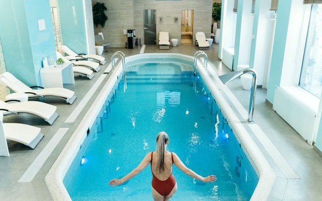
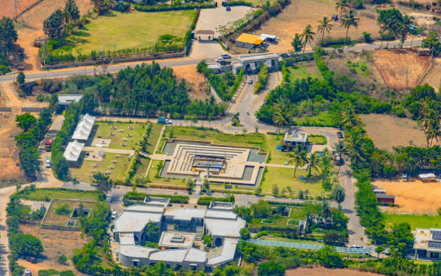
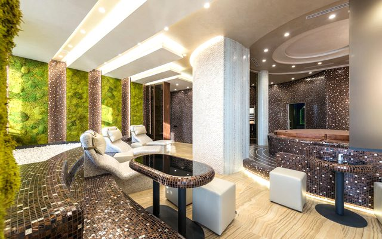
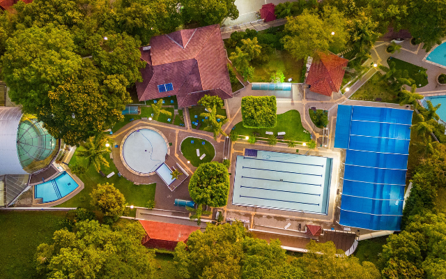
Links open external websites. Coal Controller Organisation does not endorse third-party content.


Disclaimer: Inclusion of an agency on this list does not constitute endorsement, empanelment, or recommendation by the Coal Controller Organisation or the Ministry of Coal, Government of India. Mine owners and project proponents are advised to conduct their own due diligence process before engaging any agency.
This is an indicative list of domain areas and institutional profiles. Mine owners should engage qualified professionals with relevant certifications, verified track records, and appropriate institutional affiliations. This list does not constitute an endorsement.
Disclaimer: Inclusion of an expert does not constitute endorsement, empanelment, or recommendation by the Coal Controller Organisation or the Ministry of Coal, Government of India. Users are advised to independently verify credentials and suitability before engaging any individual.